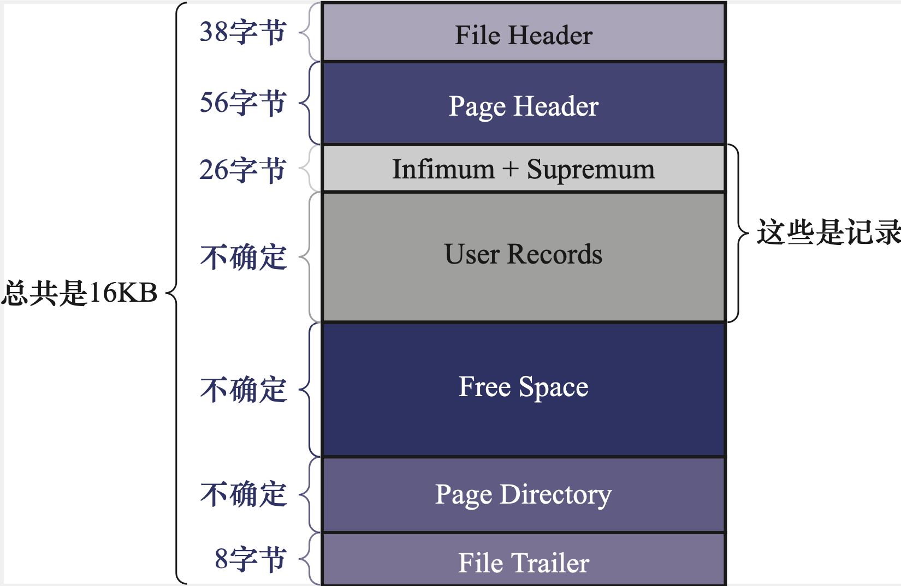

InnoDB数据页结构 -《MySQL是怎样运行的》ch5
CH5 InnoDB数据页结构
5.1 不同类型页简介
页是InnoDB管理存储空间的基本单位，一个页的大小一般是16KB
InnDB为了不同目的设计了多重不同类型的页，例如
存放表空间头部信息的页
存放Change Buffer信息的页
存放INODE的页
存放undo日志信息的页
存放表中记录的页称为索引（INDEX）页，也称为数据页
5.2 数据页结构速览
一个数据页根据功能不同可以进行划分如下：
可以看出来，一个InnoDB数据页的存储空间大致划分为7个部分，有的部分大小确定，有的则是不确定的
5.3 记录在页中的存储
数据记录存储的流程
- 新生成的页没有User Records空间
- 每次插入数据，去Free Space申请一个新空间，划分到User Records部分
- Free Space被全部用完后，意味着这个页使用完了，需要去申请新的页
5.3.1 记录头信息的秘密
创建一个表，表格中的格式示意图如同：

创建一个表：
1 | CREATE TABLE `page_demo` ( |
插入几条数据
1 | INSERT INTO page_demo VALUES (1, 100, 'aaaa'), (2, 200, 'bbbb'), (3, 300, 'cccc'), (4, 400, 'dddd'); |
如果只展示其中的的头信息以及c1, c2, c3列值的信息，将数据这样展示，理解其中头信息的属性的作用

deleted_flag：该属性用来标记当前记录是否被删除，占用1比特，值为0表示记录存在，值为1表示记录删除
操作删除的记录实际没有从磁盘中被删除，因为删除之后，需要在磁盘上重现排列，造成性能消耗
所有删除掉的记录被组成为一个垃圾链表，记录在链表中的空间称为可重用空间
min_rec_flag：B+树中每层叶子节点中的最小的目录项记录都会添加该标记
n_owned：略
heap_no：我们向表中插入的记录的本质上都是放到数据页的User Records部分，一条条数据紧密的排列称为堆，堆中的相对位置就是heap_no。
heap_no值为0 和1 的记录被自动在每个页中加入了，这两条记录被称为伪记录或者虚拟记录，在堆中的位置相对靠前
一条代表页面中的最小记录，称为Infimum记录
另外一条代表页面中的最大记录，称为Supremum记录
堆中记录的heap_no在被分配后不会发生改动了，即使删除了记录
Record_type：属性代表当前记录的类型。一共四种类型的记录，0表示普通记录，1表示B+树非叶节点的目录项记录，2表示Infimum记录，3表示Supremum记录。
next_record：表示当前记录的真实数据到下一条记录的真实数据的距离；如果属性为正，代表下一条记录在当前记录后；属性记录为负，代表下一条记录在当前记录前面（本质链表）
注意，下一条记录是的不是插入顺序的下一条
而是按照主键值从下到大排列的下一条
补充：使用当前记录的真实数据到下一条记录的真实数据的距离，因为这个位置非常好，向左就是头信息，向右就是真实数据
5.4 Page Directory（页目录）
如果查找数据需要从头开始查找，性能会较低，所以设计MySQL的时候设计了一个目录，制作过程如下：
- 将所有的正常记录（包括Infimum和Supremum，不包括来及链表的记录）划分为几个组；
- 每个组的最后一条记录（最大记录），记录的头信息中的n_owned属性表示该组内共有几条数据；
- 每个组中的最后一条记录在页面中的地址偏移量（该记录的真实数据与页面第0个字节的距离），被单独提取出来保存到页尾部的地方。这个地方就是Page Directory（页目录）。页目录中的地址偏移量称为槽
一些规定：
Infimum分组只能有一条记录
Supremum分组只能在1~8条之间
其他分组条数范围在4~8之间
给记录分组，是按照下面的步骤进行的
- 初始情况下，一个数据页只有Infimum和Supremum记录这两个，分属于连个槽，分别代表Infimum和Supremum记录在页面中的地址偏移量
- 之后每插入一条记录，都会从页目录中找到对应记录的主键值比待插入记录的主键值大并且差值最小的槽，然后该槽对应的记录的n_owner加1，表示本组内又添加一个记录，知道该组的记录等于8个
- 当一个组中的记录等于8后，再插入一条记录，会将组中的记录拆分为两个组，其中一个组中四条记录，另一个5条记录。拆分过程在页目录中添加一个新的槽
槽和数据记录的关系图

在一个数据页中查找指定主键值得记录，过程分为两步：
- 通过二分法确定该记录所在分组对应的槽，然后找到该槽所在分组中主键值最小的记录
- 通过next_record属性遍历查找该槽中的各个记录
5.5 Page Header（页面头部）
页头部是用于记录数据页中的记录的状态信息，占用固定的56字节，用途如下
| 状态名称 | 占用空间 | 描述 |
|---|---|---|
| PAGE_N_DIR_SLOTS | 2字节 | 页目录中的槽数量 |
| PAGE_HEAP_TOP | 2字节 | 未使用的空间的最小地址，该地址之后就是Free Space |
| PAGE_N_HEAP | 2字节 | 第一位表示本记录是否是紧凑型的记录，剩余15位表示本页对中记录的数量 |
| PAGE_FREE | 2字节 | 各个已删除的记录通过next_record组成一个单向链表，表示该链表头结点在页中的偏移量 |
| PAGE_GARBAGE | 2字节 | 已删除的记录占用的字节数 |
| PAGE_LAST_INSERT | 2字节 | 最后插入记录的位置 |
| PAGE_DIRECTION | 2字节 | 记录插入的方向 |
| PAGE_N_DIRECTION | 2字节 | 一个方向连续插入的记录数量 |
| PAGE_N_RECS | 2字节 | 该页中用户记录的数量（不包括Infimum和Supremum，被删除的数据） |
| PAGE_MAX_TRX_ID | 8字节 | 修改当前也的最大事务id |
| PAGE_LEVEL | 2字节 | 当前页在B+树中的层级 |
| PAGE_INDEX_ID | 8字节 | 索引ID，表示当前页属于哪个索引 |
| PAGE_BTR_SEG_LEAF | 10字节 | B+树叶子节点段的头部信息 |
| PAGE_BTR_SEG_TOP | 10字节 | B+树非叶子节点端的头部信息 |
5.6 File Header（文件头部）
File用于存储数据页的各种状态信息
包含以下状态
| 状态名称 | 占用空间 | 描述 |
|---|---|---|
| FIL_PAGE_SPACE_OR_CHKSUM | 4字节 | 属性表示该页的校验和，在高于4.0.14的版本中 |
| FIL_PAGE_OFFSET | 4字节 | 页号 |
| FIL_PAGE_PREV | 4字节 | 上一个页的页号 |
| FIL_PAGE_NEXT | 4字节 | 下一个页的页号 |
| FIL_PAGE_LSN | 8字节 | 页面被最后修改时对应的LSN（Log Sequence Number，日志序列号）值 |
| FIL_PAGE_TYPE | 2字节 | 页的类型 |
| FIL_PAGE_FILE_FLUSH_LSN | 8字节 | 仅仅在系统表空间的第一个页中定义，代表文件至少被刷新到了对应的LSN值 |
| FIL_PAGE_ARCH_LOG_NO_OR_SPACE_ID | 4字节 | 页属于哪一个表空间 |
- FIL_PAGE_SPACE_OR_CHKSUM：该属性代表当前页面的校验和，校验和是将长字符串生成短的值，比较短的值河科院省去长字符串的时间损耗
- FIL_PAGE_OFFSET：每一个页的页号，通过页号唯一定位一个页
- FIL_PAGE_TYP：页的类型，具体略
- FIL_PAGE_PREV && FIL_PAGE_NEXT：无法通过一个页分配数据，将数据分配到多个不连续的表中存储，该属性用于关联数据页的表
5.7 File Trailer（文件尾部）
用于监测一个页是否完整
应对场景：
在内存中修改了数据，刷新到磁盘时候断电了，只刷新了一部分的数据
该部分由8个字节组成，分为两个部分
- 前四个字节代表也的校验和。发生刷新的时候，首先刷新页首File Header的校验和，写完后更新页尾的校验和，如果二者不同，代表刷新过程中发生了错误
- 后4个字节代表最后修改的LSN的后4个字节，同样用于和页首比对，如果二者不同，代表刷新过程中发生了错误